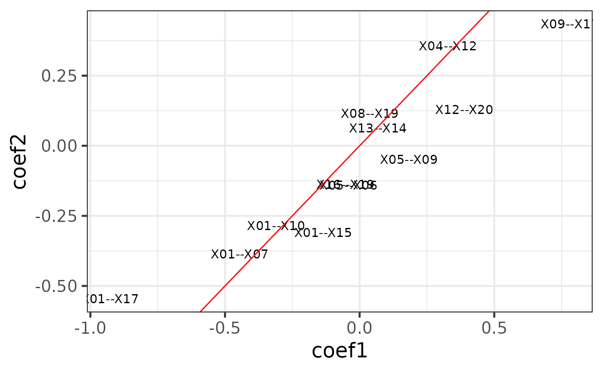

An introduction to the cpop package
Kevin Y.X. Wang
School of Mathematics and Statistics, The University of Sydney, AustraliaCPOP.Rmd##
## Attaching package: 'dplyr'## The following objects are masked from 'package:stats':
##
## filter, lag## The following objects are masked from 'package:base':
##
## intersect, setdiff, setequal, unionIntroduction
The CPOP package provides functions to perform Cross-Platform Omics Prediction method described in our paper. The aim is to construct a transferable risk prediction mode with a strong emphasis on addressing practical challenges in the implementation of biomarkers/assays.
Below is a schematic drawing of the CPOP procedure:
Identify a collection of datasets with similar clinical outcomes that can be used for joint modelling.
Following that, CPOP creates features that are the ratio of each gene’s expression to that of other genes.
Features that are predictive of the clinical outcome are then selected using a regularised regression modelling framework. These features forms a candidate set of features for further selection.
The candidate features in Step 3 are reduced to only those features with consistent effect sizes across multiple datasets.
The final selected features serve as the markers used for final model construction. Visualisation methods are provided.
Step 1 and 2: data selection and pre-processing
The CPOP package provides an example data, cpop_data_binary, to demonstrate how the various functions can be run.
cpop_data_binary contains a list of 7 objects:
-
x1,x2, andx3which are simulated gene expression data. -
y1,y2, andy3which are simulated binary response corresponding to the x’s. -
betawhich is the true coefficients of interest.
After attaching these objects, we can perform the (log-)ratio constructions using the pairwise_col_diff on the matrices x1, x2, and x3. One of the main idea behind CPOP is that, the gene expression data scale (x1, x2, and x3) can vary greatly between data platforms. But the relative expression between the genes (e.g. difference between gene A and gene B) are more stable. pairwise_col_diff is a function that computes for all pairwise differences between the columns in a given matrix, with the new output being a matrix with the columns geneA--geneB.
Note: the phrase “log-ratio” is used in context where the expression values of biomarkers exhibit differences across several orders of magnitudes. This is the most common in the context of gene expression data with microarray (intensity measurements) and RNA-Sequencing (counts) data. pairwise_col_diff assumes that these values with large magnitude of difference has been dealt with, e.g. through the use of logarithm transformations, and thus, the act of taking difference between columns of a data matrix is similar to how one would construct a ratio (i.e. log(A/B) = log(A) - log(B)). Thus, even though we refer to these values as log-ratios, the actual data matrices that we are operating on are assuming that the columns are already on a transformed scale, such that the difference between feature values is meaningful.
## [1] "x1" "x2" "x3" "y1" "y2" "y3" "beta"
x1 = cpop_data_binary$x1
x2 = cpop_data_binary$x2
x3 = cpop_data_binary$x3
y1 = cpop_data_binary$y1
y2 = cpop_data_binary$y2
y3 = cpop_data_binary$y3
z1 = pairwise_col_diff(x1)
z2 = pairwise_col_diff(x2)
z3 = pairwise_col_diff(x3)
boxplot(cbind(x1,x2))
Step 3 and 4: feature selection
The cpop_model function is the main function of the CPOP package. The first four inputs are z1, z2, y1 and y2, where (z1, y1) and (z2, y2) are the log-ratio matrix and the response variable of the first and second data, respectively. In this particular example, the response variable is binary, hence, we can also specify family = "binomial" (default) for this model.
The alpha parameter is one of the penalty terms of the classic Elastic Net model, where alpha = 1 corresponds to a Lasso model and alpha = 0 corresponds to a Ridge model. The cpop_model uses glmnet::cv.glmnet in the backend, and so the penalty term lambda is automatically chosen using the default of lambda.min.
The CPOP model iteratively selects features based on the fit of the model or, if it reaches a pre-determined number of features with the paramter n_features being the main control for this. Here, we arbitary set this to a small number of 10 for illustration.
cpop_result = cpop_model(z1 = z1, z2 = z2,
y1 = y1, y2 = y2,
family = "binomial",
alpha = 1,
n_features = 10)## Absolute colMeans difference will be used as the weights for CPOP## Fitting CPOP model using alpha = 1## Based on previous alpha, 0 features are kept## CPOP1 - Step 01: Number of selected features: 0 out of 190## CPOP1 - Step 02: Number of selected features: 9 out of 190## CPOP1 - Step 03: Number of selected features: 16 out of 190## 10 features was reached.## A total of 16 features were selected.## Removing sources of collinearity gives 13 features.## 10 features was reached.## A total of 13 features were selected.## CPOP2 - Sign: Step 01: Number of leftover features: 9 out of 13## The sign matrix between the two data:##
## -1 0 1
## -1 0 0 1
## 0 0 0 0
## 1 3 0 0## CPOP2 - Sign: Step 02: Number of leftover features: 8 out of 13
## The sign matrix between the two data:##
## -1 0 1
## -1 0 0 0
## 0 0 0 0
## 1 1 0 0## CPOP2 - Sign: Step 03: Number of leftover features: 8 out of 13
## The sign matrix between the two data:##
## -1 0 1
## -1 0 0 0
## 0 0 0 0
## 1 0 0 0Step 5: visualisation
The output of the cpop_model function is a cpop object with its own defined methods.
The main method for a cpop object is the plot_cpop function, which produces several useful plot to understand what the CPOP methodology has done or performed.
class(cpop_result)## [1] "cpop" "list"The first plot is using the type = "text" option. A labelled scatter plot shows the estimated coefficients of the selected features from data1 (i.e. (z1, y1), x-axis) vs the same coefficients from data2 (i.e. (z2, y2), y-axis).
plot_cpop(cpop_result = cpop_result, type = "text")## $plot
##
## $data
## # A tibble: 8 × 3
## coef_name coef1 coef2
## <fct> <dbl> <dbl>
## 1 X01--X10 -0.322 -0.245
## 2 X09--X17 0.722 0.486
## 3 X11--X14 0.130 0.00158
## 4 X12--X20 0.404 0.152
## 5 X01--X07 -0.437 -0.400
## 6 X01--X15 -0.158 -0.322
## 7 X01--X17 -0.901 -0.599
## 8 X04--X12 0.353 0.406We can see that most of the selected features had similar coefficients across the two data. This is exactly what CPOP is aiming to achieve: selecting features that are consistent within each datasets.
However, each of the feature (e.g. X01--X10) actually corresponds to two of the original features in the raw data X01 and X10 in the data x1 and x2. We can further visualise these features in the original features.
plot_cpop(cpop_result = cpop_result, type = "ggraph")## $plot
##
## $data
## # A tibble: 8 × 7
## from to coef1 coef2 coef_avg coef_abs sign_coef1
## <chr> <chr> <dbl> <dbl> <dbl> <dbl> <chr>
## 1 X01 X10 -0.322 -0.245 -0.284 0.284 Negative
## 2 X09 X17 0.722 0.486 0.604 0.604 Positive
## 3 X11 X14 0.130 0.00158 0.0660 0.0660 Positive
## 4 X12 X20 0.404 0.152 0.278 0.278 Positive
## 5 X01 X07 -0.437 -0.400 -0.419 0.419 Negative
## 6 X01 X15 -0.158 -0.322 -0.240 0.240 Negative
## 7 X01 X17 -0.901 -0.599 -0.750 0.750 Negative
## 8 X04 X12 0.353 0.406 0.379 0.379 PositiveHere we see that despite the features that we have selected in terms of the ratio, in actual fact, only a handful of features are useful. In particular, X01, X09 and X17 are the main contributors.
Predictions
Another useful method on the cpop object is the predict_cpop function. This function takes the previous CPOP result and a new (log-)ratio matrix to produce predictions.
The first column of the output are the sample IDs. The second and third column are prediction results from data1 and data2 respectively. Since we have done the previous diagnostic test that the coefficient size between the two data are very similar, we do expect that these values to be very highly correlated. The last column is cpop_model_avg, which is a simple average between the two predicted values.
Note that the predicted values here are on the logit scale (recall that we are performing a logistic regression on binary responses using the elastic net model in the background). We can also transform these values back to predicted probability scale using the CPOP::expit function.
predict_cpop(cpop_result, newz = z3) %>% head()## # A tibble: 6 × 6
## samples cpop_model1 cpop_model2 cpop_model_avg cpop_model_avg_prob
## <chr> <dbl> <dbl> <dbl> <dbl>
## 1 1 0.465 0.130 0.297 0.573
## 2 2 -1.79 -0.992 -1.39 0.207
## 3 3 0.853 0.575 0.714 0.671
## 4 4 -0.936 -0.709 -0.823 0.306
## 5 5 -0.424 -0.640 -0.532 0.370
## 6 6 1.00 1.31 1.16 0.760
## # … with 1 more variable: cpop_model_avg_class <chr>
predicted_plotdf = predict_cpop(cpop_result, newz = z3) %>%
dplyr::mutate(
cpop_model1 = expit(cpop_model1),
cpop_model2 = expit(cpop_model2),
cpop_model_avg = expit(cpop_model_avg))
predicted_plotdf %>%
ggplot(aes(x = cpop_model1, y = cpop_model2)) +
geom_point() +
geom_abline()